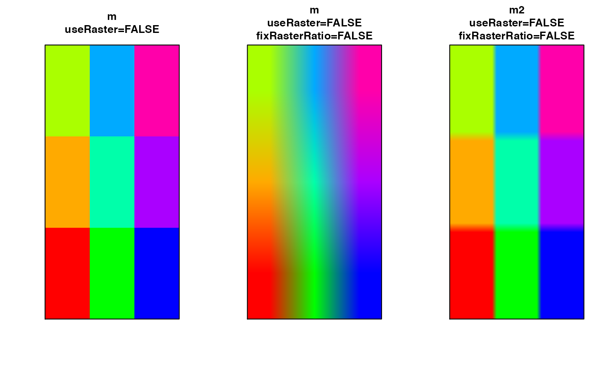
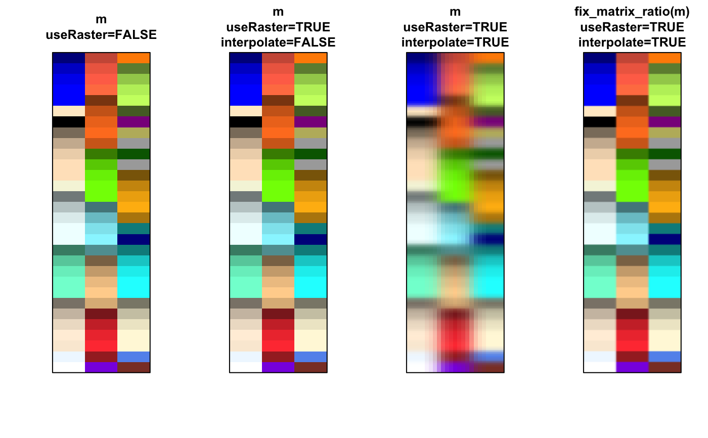
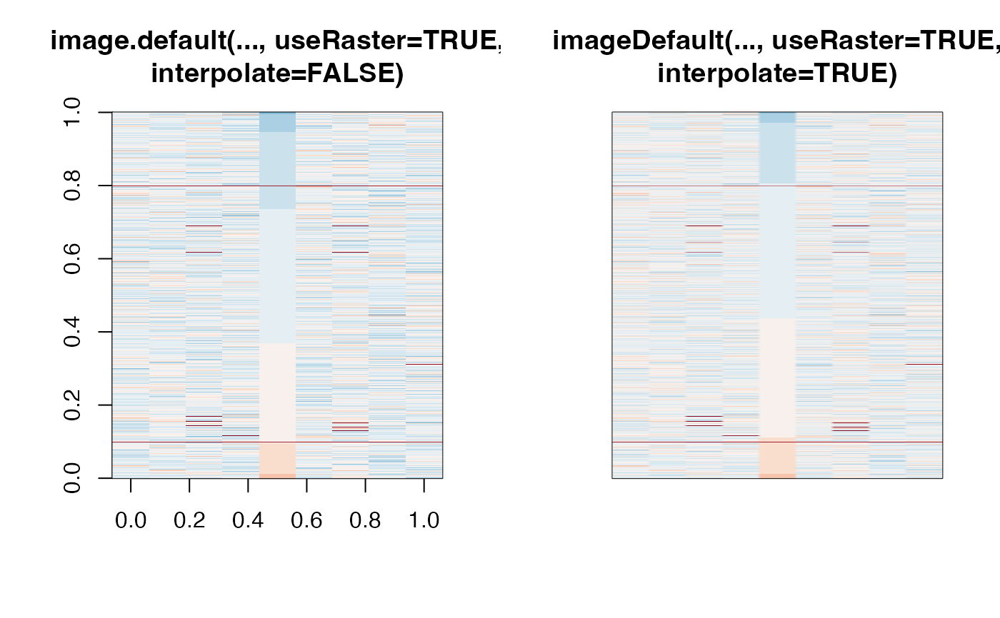
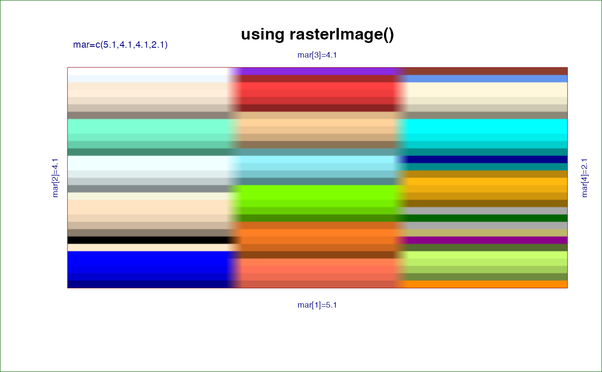
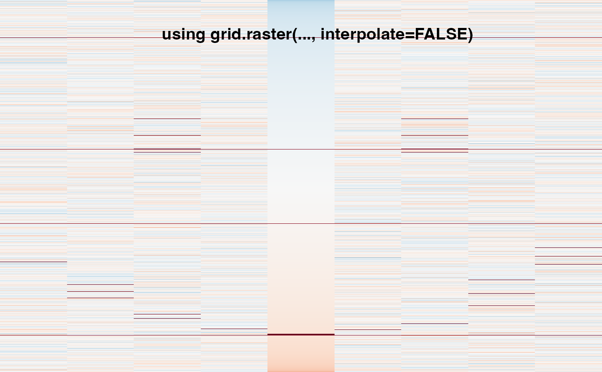
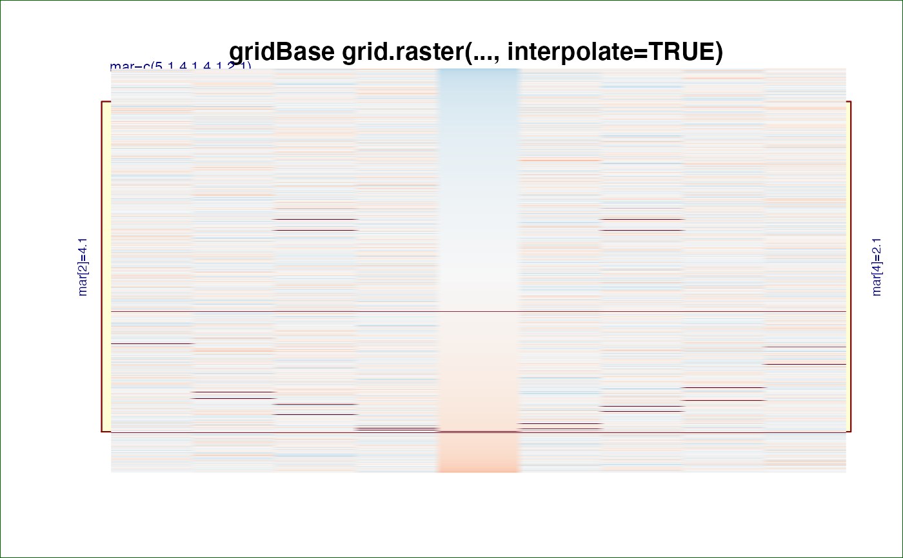
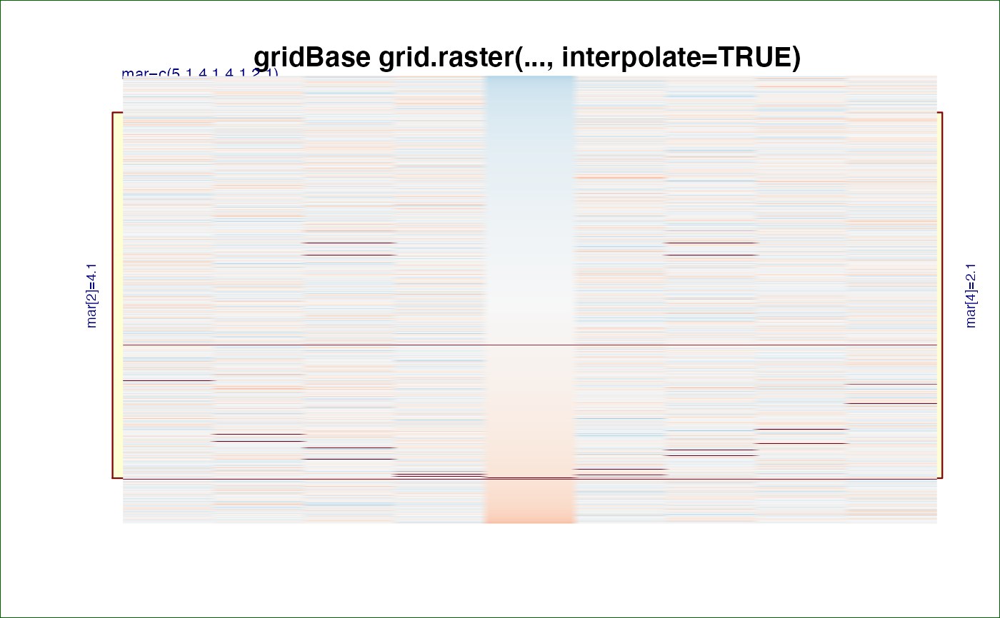

Fix matrix dimension ratio
fix_matrix_ratio(
x,
maxRatioFix = 10,
minRasterMultiple = NULL,
rasterTarget = 200,
ratioThreshold = 3,
verbose = FALSE,
...
)Arguments
- x
matrixinput- maxRatioFix
integer value indicating the maximum multiple used to duplicate columns or rows. This value is used to prevent replicating a matrix with 1 million rows and 10 columns into a 10 million by 10 million matrix. For example
maxRatioFix=100will not replicate columns or rows more than 100 times.- minRasterMultiple
integer vector of 1 or 2 values, referring to the minimum number of times each row or column is replicated, respectively. For example
minRasterMultiple=c(2,5)will at minimum replicate each row 2 times, and each column 5 times.- rasterTarget
integer number reflecting the target minimum number of rows and columns. This value is used to protect from interpolating a 5x5 matrix, which yields a blurry result. When
rasterTarget=200, a 5x5 matrix will be expanded to 200x200, and the 200x200 matrix will be interpolated to yield a sharp image.- ratioThreshold
numeric value indicating the ratio of nrow:ncol above which this function will adjust the dimensions of the output matrix. For example when
ratioThreshold=3there must be 3 times more rows than columns, or 3 times more columns than rows.- verbose
logical indicating whether to print verbose output.
- ...
additional arguments are ignored.
Details
This function is experimental, replicating the logic used inside
imageDefault() to ensure a numeric matrix is roughly 1:1 ratio
of nrow:ncol. It currently duplicates columns or rows n times
in an effort to make the resulting matrix less than a 2:1 ratio.
The purpose is to allow rasterImage() or grid.raster() with
argument interpolate=TRUE to produce an output raster image
that has interpolated the image with reasonably square pixels.
Without this adjustment, a matrix with 2,000 rows and 10 columns
would be interpolated much more on the x-axis than the y-axis,
blurring the data along the x-axis.
The main goal is to enable arguments useRaster=TRUE and
interpolate=TRUE which allows an output image to contain
more rows than pixels, and still have the pixels represent
properly smoothed content.
See the examples for visual examples of the effect, showing
image.default(), jamba::imageDefault(),
graphics::rasterImage(), and grid::grid.raster().
See also
Other jam numeric functions:
deg2rad(),
noiseFloor(),
normScale(),
rad2deg(),
rowGroupMeans(),
rowRmMadOutliers(),
warpAroundZero()
Examples
m <- matrix(rainbow(9), ncol=3);
m2 <- fix_matrix_ratio(m);
par("mfrow"=c(1,3));
imageByColors(m, useRaster=FALSE,
main="m\nuseRaster=FALSE");
imageByColors(m, useRaster=TRUE, fixRasterRatio=FALSE,
main="m\nuseRaster=FALSE\nfixRasterRatio=FALSE");
imageByColors(m2, useRaster=TRUE, fixRasterRatio=FALSE,
main="m2\nuseRaster=FALSE\nfixRasterRatio=FALSE");

m <- matrix(colors()[1:90], ncol=3)
dim(m)
#> [1] 30 3
m2 <- fix_matrix_ratio(m);
dim(m2);
#> [1] 210 30
par("mfrow"=c(1,4));
imageByColors(m, useRaster=FALSE,
main="m\nuseRaster=FALSE");
imageByColors(m, useRaster=TRUE, interpolate=FALSE,
main="m\nuseRaster=TRUE\ninterpolate=FALSE");
imageByColors(m, useRaster=TRUE, interpolate=TRUE, fixRasterRatio=FALSE,
main="m\nuseRaster=TRUE\ninterpolate=TRUE");
imageByColors(m2, useRaster=TRUE, fixRasterRatio=FALSE,
main="fix_matrix_ratio(m)\nuseRaster=TRUE\ninterpolate=TRUE");

par("mfrow"=c(1,1));
## Complicated example showing the effect of interpolate=TRUE
testHeatdata <- matrix(rnorm(90000), ncol=9)[,1:9];
testHeatdata <- testHeatdata[order(testHeatdata[,5]),];
g1 <- seq(from=10, to=10000, by=1000);
testHeatdata[g1+rep(1:3, each=length(g1)),] <- 9;
for (i in seq(from=125, to=235, by=3)) {
ix <- round(sin(deg2rad(i))*5+5);
iy <- round(-cos(deg2rad(i))*5500 + 3500);
testHeatdata[iy:(iy+4), ix] <- 10;
}
g2 <- 3011+c(1:12*90);
testHeatdata[g2+rep(1:3, each=length(g2)), c(3,7)] <- 10;
testHeatdata <- testHeatdata[10000:1,];
col <- getColorRamp("RdBu_r", n=15, lens=1, trimRamp=c(4,1));
par("mfrow"=c(1,2));
image.default(z=t(testHeatdata), col=col, useRaster=TRUE,
main="image.default(..., useRaster=TRUE,\ninterpolate=FALSE)");
imageDefault(z=t(testHeatdata), col=col, useRaster=TRUE,
main="imageDefault(..., useRaster=TRUE,\ninterpolate=TRUE)");

par("mfrow"=c(1,1));
m2r <- as.raster(m2);
nullPlot(xaxs="i", yaxs="i",
main="using rasterImage()");
rasterImage(m2r, xleft=1, xright=2, ybottom=1, ytop=2);

if (require(grid)) {
testHeatdata2 <- testHeatdata[10000:1,,drop=FALSE];
testHeatdata2[] <- circlize::colorRamp2(breaks=seq(from=-10, to=10, length.out=25),
colors=getColorRamp("RdBu_r", n=25))(testHeatdata2);
testHeatdata2 <- fix_matrix_ratio(testHeatdata2);
m2r <- as.raster(testHeatdata2);
par("mfrow"=c(1,1));
nullPlot(xaxs="i", yaxs="i",
doBoxes=FALSE);
grid::grid.raster(m2r,
x=grid::unit(0.5, "npc"),
y=grid::unit(0.5, "npc"),
height=grid::unit(1, "npc"),
width=grid::unit(1, "npc"),
interpolate=FALSE);
title(main="using grid.raster(..., interpolate=FALSE)")
nullPlot(xaxs="i", yaxs="i",
doBoxes=FALSE);
grid::grid.raster(m2r,
x=grid::unit(0.5, "npc"),
y=grid::unit(0.5, "npc"),
height=grid::unit(1, "npc"),
width=grid::unit(1, "npc"),
interpolate=TRUE);
title(main="using grid.raster(..., interpolate=TRUE)")
}
#> Loading required package: grid

 ## Example showing usr coordinates for grid.raster()
if (require(gridBase)) {
nullPlot(xaxs="i", yaxs="i",
main="gridBase grid.raster(..., interpolate=TRUE)");
vps <- gridBase::baseViewports();
grid::pushViewport(vps$inner, vps$figure, vps$plot);
grid::grid.raster(m2r,
x=grid::unit(1.5, "native"),
y=grid::unit(1.5, "native"),
height=grid::unit(1, "native"),
width=grid::unit(1, "native"),
interpolate=TRUE);
grid::popViewport(3);
}
#> Loading required package: gridBase

## Example showing usr coordinates for grid.raster()
if (require(gridBase)) {
nullPlot(xaxs="i", yaxs="i",
main="gridBase grid.raster(..., interpolate=TRUE)");
vps <- gridBase::baseViewports();
grid::pushViewport(vps$inner, vps$figure, vps$plot);
grid::grid.raster(m2r,
x=grid::unit(1.5, "native"),
y=grid::unit(1.5, "native"),
height=grid::unit(1, "native"),
width=grid::unit(1, "native"),
interpolate=TRUE);
grid::popViewport(3);
}
#> Loading required package: gridBase
